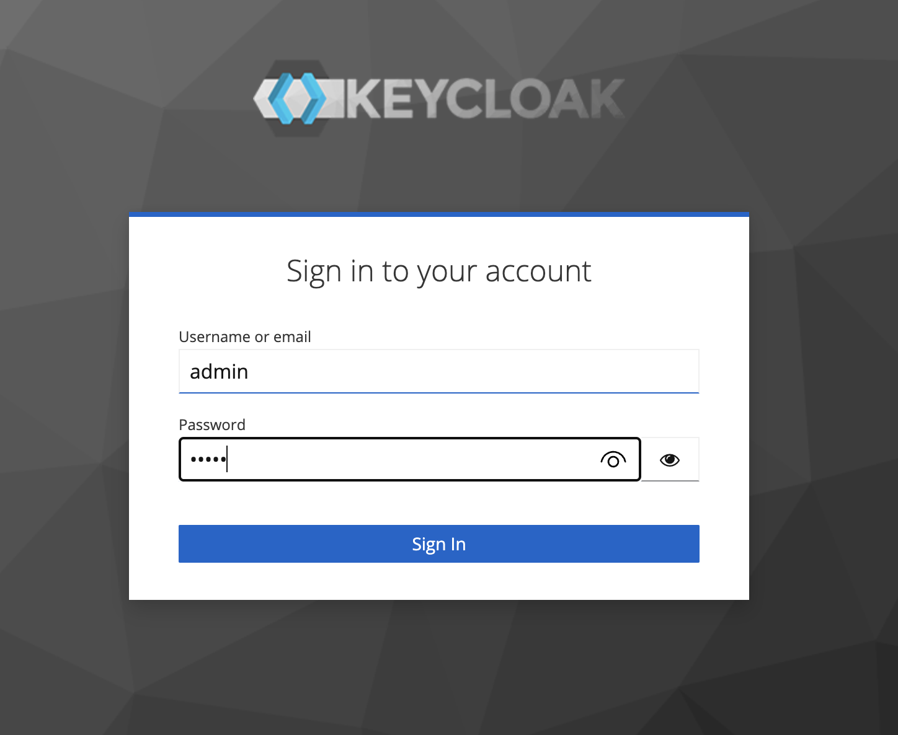
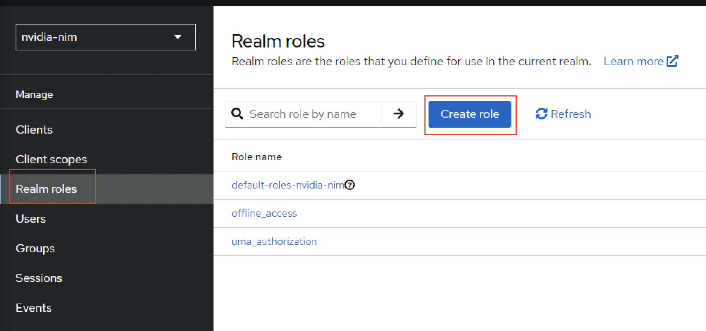
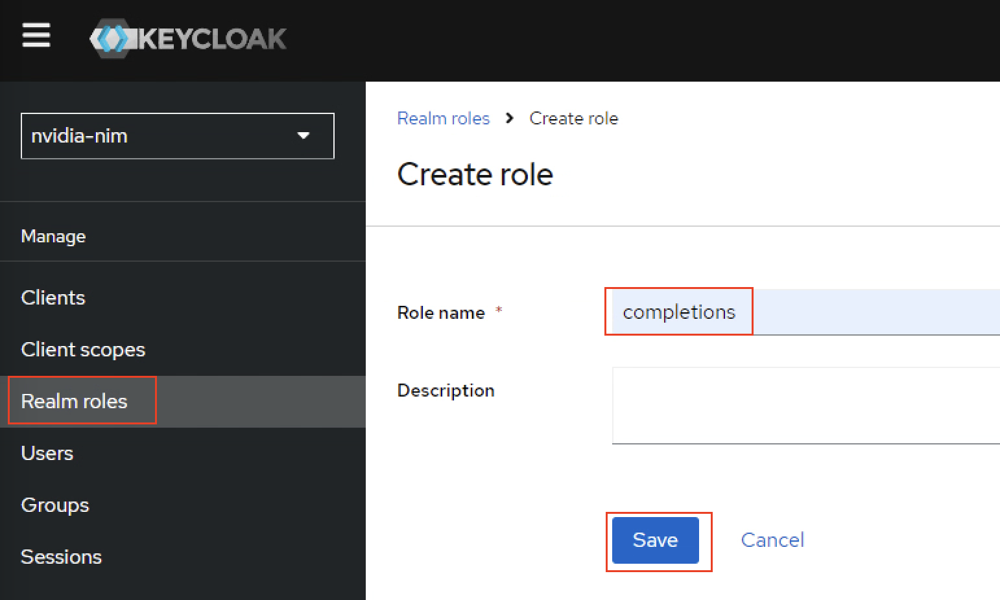
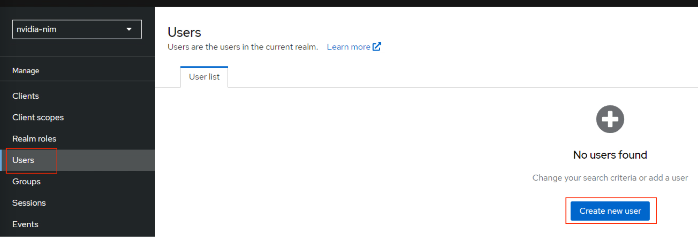
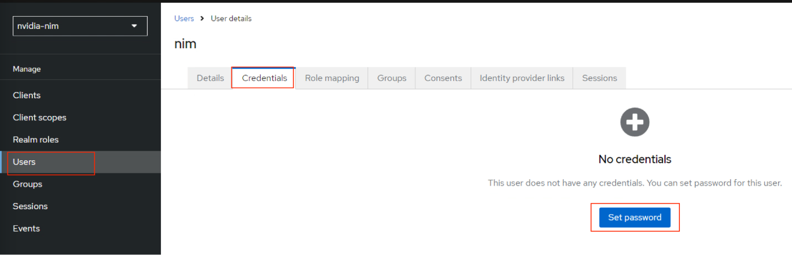
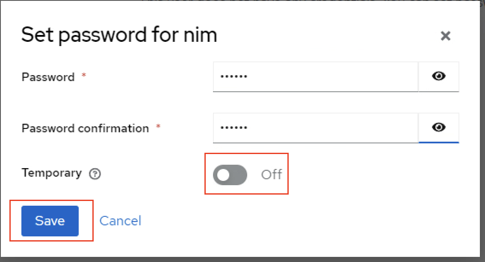

Sample Implementation Details
The service mesh uses an Istio-based service mesh for creating a secure, observable, and highly configurable communication layer. OIDC is provided by tools like Keycloak, DEX, or other commercial solutions as an OIDC provider. NVIDIA developed and tested this document using the following installations methods.
Prerequisites
A Kubernetes cluster and the cluster-admin role. Refer to Platform Support for information about supported operating systems and Kubernetes platforms.
A Linux VM or WSL on Windows.
Service Mesh Installation Using Istio
Run the following command to download Istio.
curl https://raw.githubusercontent.com/istio/istio/release-1.23/release/downloadIstioCandidate.sh | sh -The download creates a directory with name such as
istio-1.2x.x.Change directory into the Istio directory.
cd istio-1.23.2Add
istioctltoPATH.export PATH=$PWD/bin:$PATHOptional: For VMware Tanzu Kubernetes or Red Hat OpenShift, create a namespace and label the namespace to run privileged pods.
kubectl create ns istio-systemkubectl label --overwrite ns istio-system pod-security.kubernetes.io/warn=privileged pod-security.kubernetes.io/enforce=privilegedInstall Istio with the demonstration profile.
istioctl install --set profile=demo -yDetermine the storage classes on the cluster. Grafana Loki uses persistent storage and you must specify a storage class.
kubectl get storageclassUpdate the storage class for Loki.
sed -i '/accessModes:/i\ storageClassName: <storage-class-name> ' samples/addons/loki.yamlRun the below command to install the add-ons like Prometheus, Grafana and Jaeger.
kubectl rollout status deployment/kiali -n istio-systemkubectl rollout status deployment/kiali -n istio-system
Install OIDC Keycloak
Label the default namespace to run the privileged pods.
kubectl label --overwrite ns default pod-security.kubernetes.io/warn=privileged pod-security.kubernetes.io/enforce=privilegedInstall KeyCloak.
kubectl create -f https://raw.githubusercontent.com/keycloak/keycloak-quickstarts/latest/kubernetes/keycloak.yaml
Configure KeyCloak
Determine the node port of the Keycloak service.
kubectl get svcExample Output
NAME TYPE CLUSTER-IP EXTERNAL-IP PORT(S) AGE keycloak LoadBalancer 10.108.216.157 10.28.234.100 8080:30111/TCP 21h
List the worker IP addresses and then use any one of them with the service node port.
for node in `kubectl get nodes | awk '{print $1}' | grep -v NAME`; do echo $node ' ' | tr -d '\n'; kubectl describe node $node | grep -i 'internalIP:' | awk '{print $2}'; doneExample Output
test-cluster-03-worker-nbhk9-56b4b888dd-8lpqd 10.120.199.16 test-cluster-03-worker-nbhk9-56b4b888dd-hnrxr 10.120.199.23
Use any of the worker IP addresses to access the Keycloak administration interface.
10.120.199.15:30111After you access the application, you can see the page like the following. Click on Administration Console.

Enter the default credentials as
adminandadminand then sign in.
Create a new Realm.

Enter the Realm Name as
nvidia-nimand click Create.
Click Clients on the navigation bar and then click Create client.

Provide Client ID as
nvidia-nimand click Next with default values for steps 2 and 3.
Navigate to Realm roles on the left side pane and click Create to create a role.

Create role with name
chatand save.
Create another role with name
completionsand save.
Navigate to Users on left side pane and click Add user.

Create a user with name
nimand click Create.
Keycloak displays the
nimUser details page.On the
nimUser details page, click Credentials and then click Set password to create a password.
Enter the password
nvidia, set the Temporary switch to Off, and click Save.

Navigate to the Role Mapping0 tab for
nimuserand click Assign Role.
Enable chat and completion roles for
nimuserand click Assign.
Next Steps
Refer to Configure RBAC to create and validate ingress resources.